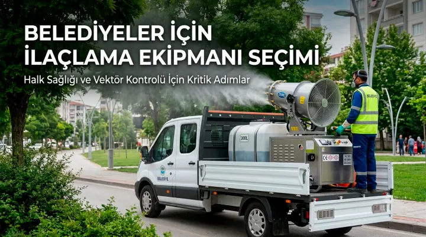

Belediyeler Neden Doğru İlaçlama Ekipmanına İhtiyaç Duyar?
Bir belediye ilaçlama makinesi seçimi, sadece bir satın alma kararı değil, halk sağlığını doğrudan etkileyen kritik bir yatırımdır. Yanlış kapasiteli veya düşük kaliteli bir cihaz, hem operasyonel verimsizliğe hem de sivrisinek ve karasinek gibi vektör kaynaklı hastalıkların kontrolünde yetersiz sonuçlara yol açabilir. Bu yazıda, belediyelerin ve kamu kurumlarının ilaçlama ekipmanı seçerken dikkat etmesi gereken temel kriterleri ele alıyoruz.
1. Kapasite ve Operasyon Ölçeği Uyumu
İlk ve en önemli kriter, cihazın kapasitesinin belediyenin operasyon ölçeğiyle uyumlu olmasıdır. Küçük bir ilçe belediyesi için yeterli olan bir model, büyükşehir ölçeğinde bir belediye için yetersiz kalabilir. Tank kapasitesi (litre), motor gücü ve hava debisi gibi teknik özellikler, taranacak güzergahın uzunluğuna ve günlük ilaçlama hedefine göre değerlendirilmelidir. Örneğin Duru'nun araç üstü ilaçlama makineleri kategorisinde 50 litreden 500 litreye kadar farklı kapasitelerde modeller bulunur.

2. Sertifikasyon ve Yasal Uygunluk
Kamu ihalelerinde kullanılacak ilaçlama ekipmanlarının CE, TSE gibi uluslararası ve ulusal standartlara uygunluğu belgelenmiş olmalıdır. Ayrıca T.C. Sağlık Bakanlığı ve T.C. Gıda Tarım ve Hayvancılık Bakanlığı'nın ilgili düzenlemelerine uygun, ISO 45001 (iş sağlığı ve güvenliği) ve ISO 9001 (kalite yönetimi) gibi sertifikalara sahip üreticilerden tedarik yapılması, hem ihale süreçlerinde hem de uzun vadeli güvenilirlik açısından önemlidir.
3. Mikron Ayarı ve Uygulama Esnekliği
Belediyelerin mücadele ettiği haşere türleri (sivrisinek, karasinek, vb.) farklı boyutlarda olduğundan, seçilecek cihazın ayarlanabilir mikron aralığına sahip olması önemlidir. Bu sayede aynı cihazla farklı haşere türlerine karşı optimize edilmiş uygulamalar yapılabilir.
4. Yedek Parça ve Teknik Destek Garantisi
Sürekli sahada kullanılan bir ekipmanın arızalanması, ilaçlama programının aksamasına yol açabilir. Bu nedenle uzun süreli yedek parça garantisi (Duru ürünlerinde 10 yıl) ve hızlı teknik destek hizmeti sunan bir üretici tercih edilmelidir.
5. Üretici mi, Bayi mi? Doğrudan Üreticiyle Çalışmanın Avantajları
Belediyeler için, doğrudan üretici firmayla çalışmak; daha hızlı teknik destek, özel ihtiyaçlara göre özelleştirme imkânı ve daha şeffaf bir tedarik süreci anlamına gelir. Duru U.L.V. Teknoloji Sistemleri olarak 1990'dan bu yana, bayi değil üretici olarak hizmet veriyoruz; bu da belediyelerin doğrudan fabrika garantisi ve teknik destek almasını sağlıyor.
6. Çevresel ve Operatör Güvenliği
Cihazın metal olmayan, elektrik kaçağı yapmayan başlıklara sahip olması, su bazlı soğuk sisleme imkânı sunması ve çevreye zarar vermeyen bir tasarıma sahip olması, hem operatör güvenliği hem de toplum sağlığı açısından önemlidir.